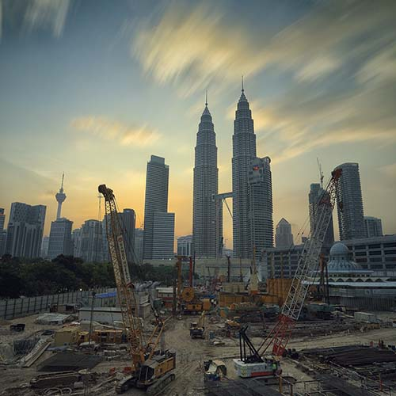

固定式高噪音車輛偵測攝影系統
科技執法區間測速系統引發不少爭議，下一階段就是「噪音偵測」相關系統。
測速
固定式內建警示項目:固定相機、區間測速、闖紅燈。
噪音
以分貝（dB（A ））為單位。
科技
智慧IoT導入系統，無須人工處理作業。
爭議
民眾越來越多反彈，準確度受質疑。
超速行駛遇上測速照相機就是準備接罰單，而不當駕駛行為除了超速外，當然還有高噪音車。為了取締那些改裝違法排氣管或亂催油門的噪音車，導入「聲音偵測照相系統」，可以量測車輛行駛分貝，超標就拍照寄罰單。

噪音來源


噪音系統
由於車輛噪音來源多樣，包括排氣管、傳動系統、輪胎、進氣系統和引擎等，駕駛人的不當操駕行為也會導致車輛發出噪音，為遏止這些高噪音車輛頻繁擾民，環保署去年開始推出噪音照相系統，該系統結合五大設備：麥克風、風速計、魚眼攝影機、車牌辨識攝影、控制箱體（包含噪音計、電腦主機、交換器、路由器、漏電斷路器等），透過影像輔助法抓出分貝超量的車輛。
風力發電

追尋更好的自己，風力發電機的離岸故事
隨著「千架海陸風力機計畫」的啟動，風力發電機不但可能改變台灣未來的能源分配，更衍伸出可觀的學術研究需求與龐大的產業供需。「如果各位都是一隻蝴蝶，那離岸風電在未來總有一天就能蓬勃發展。」湛翔智認為離岸示範風場將會是台灣風能產業發展的關鍵第一步，相信在不久的將來，就能看到遼闊的海面上聳立著一座座風車般的白色巨塔，轉動著支撐台灣的電力。